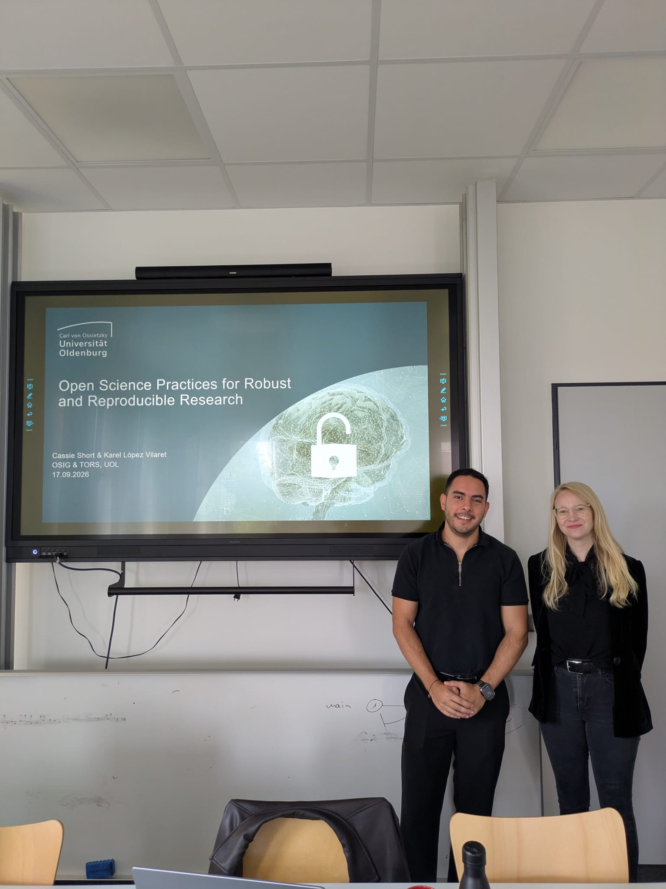

It has been a productive autumn for the OSIG community, with our members actively hosting workshops and presenting at major conferences across Europe:
- [BIDS and MEEGqc at COMBINE] Dr. Karel López Vilaret participated in the COMBINE Workshop in Berlin (September 2–4). He presented BIDS Manager and MEEGqc, two open-source tools developed right here to support reproducible multimodal neuroimaging. His presentation highlighted how these tools complement each other, from data conversion and curation to automated quality assessment of MEG and EEG recordings.
- [ESMRMB 2026 in Girona] Karel also had a massive presence at ESMRMB 2026 in Girona (September 30–October 3). Not only did he showcase the BIDS Manager through a scientific poster and a dedicated demonstration booth, but he also participated in the pre-congress workshop “Imaging without Borders” in collaboration with CAMERA. This hands-on workshop focused on assembling low-field MRI hardware, highlighting the incredible potential of open-source hardware to democratize medical imaging worldwide.
- [Bremen & Berlin Workshops] September was a busy month for open and reproducible science workshops! Cassie and Karel teamed up to deliver an excellent workshop at the University of Bremen, bringing together PhD students, postdocs, and data management staff. Cassie covered the theoretical side of open science, while Karel led a practical session on the BIDS Manager. The following week, Cassie taught an intensive two-day online workshop titled 'Multiverse Analysis: Making Analytical Uncertainty Transparent' for the IQB Research Data Centre at Humboldt-Universität zu Berlin. Participants learned the conceptual background of multiverse analysis before building, visualizing, and discussing their own multiverse models.
- [Practical Project Symposium] Closer to home, on October 20th, Cassie gave students a comprehensive Introduction to Open Science seminar. The session covered key principles like research credibility, reproducibility, transparency, responsible data sharing, and researcher degrees of freedom.
- [OSIG YouTube Channel] Stay tuned for the launch of the official OSIG YouTube channel! We are planning two exciting streams of content: videos from the UOL Open Science Conference 2025, and a series of exclusive interviews with key characters in the open science movement.
